ภาพ AI ใช้กำหนด mood และ composition เท่านั้น ไม่ใช่ pixel-perfect specification: HUD ล่าสุดยังมีจุด pagination และขาด EXP / Quick Aid บางส่วน ให้ยึดข้อกำหนดด้านล่างแทน Mobile v1.1 uses the updated landscape reference; its missing Auto Aid labels and small controls are not normative.
Demo only: this row-add interaction is not the production hotbar layout or bar-count reference. See the main-screen hotbar specification below.
Auto Combat
Auto settings
Skill priority, target selection, range — เชื่อมกับระบบที่เกมรองรับจริง
Quick Aid
Auto Aid Rulesตัวอย่าง interaction เท่านั้น ไม่ใช้ไอเทมจริง
Quick Access · Feature gated
State
Treatment
Ready
Full artwork; hotkey visible
Hover / focus
Subtle highlight; keyboard focus ring
Pressed / selected
Muted gold surface; no heavy glow
Active
Clear active treatment distinct from selected and cooldown states
Cooldown
Dark radial overlay + remaining time
Unavailable
Dim artwork + explicit reason in tooltip
Insufficient MP
Distinct readable state; do not confuse with cooldown or unavailable
Empty / add
Subtle + icon opens skill or item assignment
Auto active
Green indicator + ON text; independent of Auto Aid
Main screen hotbar specification
The shortcut examples Q, E, R, F, 1–6, 9, 0, Tab, Shift, and Space are illustrative, not fixed defaults. Preserve existing game controls and validate conflicts before saving. The existing Settings guidance lists four bars × nine slots; retain that assignment capacity unless the authoritative game configuration changes it. The requested 1/2 indicator describes the active main-screen page and does not by itself remove saved bindings.
Element
Behavior and visual guidance
Desktop
Mobile / touch
Skill slots
Use compact rounded-square translucent slots, minimal borders, muted gold accents, and clear shortcut labels. Show the assigned shortcut at the top-left of each assigned skill slot.
Activate with the assigned key; hover shows skill name and available details. Support drag-and-drop assignment.
Hide keyboard labels in touch mode. Tap to activate; long press opens assignment or configuration.
Skill bars and page state
Support switching between main-screen skill-bar pages and show the current page as 1/2. Tab is an illustrative page-cycle binding and may be remapped.
Switch pages with the configured key; keep the page indicator visible and synchronized.
Provide a visible touch control to switch pages; do not show keyboard shortcut labels.
Custom keybindings
Remap skills, bar switching, combat actions, and Quick Aid through Settings → Hotkeys. Preserve the existing four-bar × nine-slot assignment capacity.
Click or press a key to bind; Escape cancels and Delete unbinds. Detect reserved or duplicate keys before saving; never silently replace an existing game control.
Use the Hotkeys settings flow; touch mode does not display shortcut labels on the HUD.
Quick Aid
Keep HP and MP consumable slots separate from combat skills. Show the remaining quantity and assigned shortcut for each occupied slot.
Activate each assigned consumable with its key; retain separate item and combat assignments.
Tap an item to use it; hide shortcut labels and retain the quantity beside the item.
Empty slots
Show a subtle + affordance. Opening it starts assignment for a skill slot or an item slot according to that slot group.
Click or drag a skill/item into the empty slot.
Tap + to choose an assignment; long press an occupied slot to configure it.
Combat actions
Provide dedicated Attack, Dodge, and Auto Combat controls, visually separate from skill and Quick Aid slots. Auto Combat keeps its own ON/OFF state.
Use assigned shortcuts and hover details; keep controls distinct from skill assignments.
Tap to activate; retain the established radial combat cluster and thumb reach.
Skill and action states
Show cooldown with remaining time; distinguish active, unavailable, and insufficient MP states. Keep state treatment readable and do not use color alone.
Hover may explain an unavailable action or MP requirement; the assigned key must not imply that an unavailable skill fired.
Use clear on-slot state indicators; tap or long press provides the relevant explanation or configuration.
Persistence
Save slot assignments and keybindings per character; reflect the last successfully saved state.
Apply assignments after successful save and preserve them when changing bars.
Use the same per-character assignments across touch play; do not display keyboard labels.
05 / Responsive HUD layout
Zone
Desktop
Mobile landscape
Top left
Portrait, HP/MP, buffs
Compact portrait, HP/MP, buff overflow
Top center
Enemy target when selected
Contextual enemy portrait, HP, status and close target
ภาพล่าสุดเป็น visual reference: ใช้ radial combat cluster แทน 4×2 grid ที่เสนอใน v1.0; ให้ถือ grid เป็นทางเลือกสำหรับทดสอบ thumb reach ไม่ใช่ข้อกำหนดบังคับ. ภาพยังไม่แสดง Auto Aid / Rules ครบ จึงต้องคงข้อกำหนด Quick Aid เดิมไว้. ไม่ใช้ภาพเป็น pixel-perfect spec.
Component
Mobile baseline (CSS px)
Behavior
Skill / utility
44–52 hit area; artwork 32–40
Rounded translucent utility tiles; radial combat artwork per reference; square skill slots remain an alternative.
Attack / Dodge / Lock
Attack 64–72; Dodge / Lock ≥44
Fixed anchors; independent touch input; do not overlap skill hit areas.
Joystick
96–112 diameter
Left thumb; movement continues during skill input; release on pointer cancel.
Quick Aid
4 slots, ≥44 each
Tap item to use; separate Auto ON/OFF and Rules; empty + assigns item.
Quick Access
≥44 each; 4 shortcuts + menu
Storage, Market, Potions, Enchant only if unlocked; collapse into menu on narrow screens.
Auto Combat
Toggle and gear each ≥44 hit area
Gear opens settings without changing ON/OFF; independent from Auto Aid.
Safe area / EXP
12–16 edge gap + device inset
Preserve both EXP bars; avoid system gesture area.
Mobile HUD scale: compact visual artwork, but do not scale interactive hit areas below 44 CSS px. Use landscape 844×390 as a reference viewport; test 640×360 and wider devices. Values are proposed implementation targets.
Adaptive states
State
Emphasis
Explore
Quest / minimap / NPC interaction; ลดความเด่นสกิล
Combat
Target / HP / skill readiness / cast feedback; ลดเมนูรอง
Auto Farm
Auto status / Quick Aid / optional session tracker; ปุ่มหลักไม่ย้าย
Party, Summons & Daily Hunts
Supplied HUD concept · panel placement and grouping reference only; names, counts, objectives, and progress values are illustrative.
Interaction Guide
Component
Interaction
Expected Behavior
Entry point
Active gameplay with a party, summons, or tracked hunts
Show each panel only while its corresponding game state is active.
Primary actions
Select a member; expand or collapse Party, Summons, and Daily Hunts
Member actions come from existing game functionality. Grouped summon HP and adaptive Party layouts are proposed; see the HUD guideline.
Desktop and mobile
Mouse or touch
Reflow panels for desktop and mobile landscape; retain names, HP, status, and objective progress without covering combat controls or EXP.
Keep these panels compact and subordinate to gameplay. Adaptive Party layouts and grouped summon HP are proposed UI improvements; retain current party and summon mechanics and use only verified data.
Panel
Content and behavior
Desktop
Mobile landscape
Visibility and constraints
Party
Support up to 24 members. Prioritize class icon, player name, HP bar, and critical status. Allow member selection and contextual settings using existing game actions only.
Adapt the number of columns to available HUD space; keep each member easy to scan and the member count visible.
Use fewer columns as width requires; preserve names, HP, status, and a touch-accessible member selection.
Hide when no party is active. Expand or collapse on demand; do not invent party roles, status types, or member actions.
Summons
Group by summon type; show quantity and HP. Expand a group to reveal individual summon details. Grouped HP is a proposed summary view, not a change to summon health behavior.
Keep type, quantity, and HP visible in the compact group; show individual records only when expanded.
Stack groups; use touch to expand or collapse individual details.
Hide when no summons are active. Read HP and count from authoritative game state.
Daily Hunts
Show tracked objectives and real-time progress only; retain the existing objective and completion rules.
Place directly below the minimap; collapse to a compact tracked-objective summary.
Place below the minimap when space allows; reflow within the safe area without covering combat controls.
Hide when there are no tracked objectives. Do not use mockup objective names or counters as defaults.
Dynamic visibility and scale
Hide inactive panels and reflow remaining panels. Use 85% of the previous design scale as the visual starting point while preserving legibility.
Reflow panels around the minimap, active gameplay, chat, combat controls, and EXP bars.
Reflow within landscape safe areas; do not shrink interactive hit areas below the existing touch-target guidance.
Show essential information first; reveal details on demand. Preserve the player’s ability to expand or collapse the active panel.
06 / Extend to other screens
Module
Guideline
Inventory / Storage
Reuse item grid, rarity, search, filter; count and empty states
Character / Equipment
Group stats; comparison and equipped slots
Skill / Passive Tree
Rounded square nodes, prerequisites, points, valid allocation states
Shop / Market
Clear price, ownership, filter, confirmation
Enchant
Show cost, success rate and outcome if supported
Quest
Objective first; details on demand
Party / Guild
Compact role and status, consistent tabs
Auto settings / Quick Aid
Separate toggles, rules, priorities and validation
Settings
Categorized navigation; HUD scale and layout reset
06A / Game-wide UI patterns · v2.1
ขยาย Brand Book จาก HUD ไปยังระบบหลักทั้งเกม โดยคง Artwork, ข้อมูล และกลไกเดิม ไม่สร้าง Main Menu ใหม่แทนหน้าต่างจริง
HUD
35% opacity · Floating controls
Widget
60% opacity · Chat / Quick Aid
Window
90% opacity · Inventory / Skill
Commerce
92% opacity · Shop / Battle Pass
Modal
96% opacity · Confirm / Rules
Overlay
50% opacity · Background dimming
Opacity เป็นค่าเริ่มต้นที่เสนอ; ตรวจ contrast กับฉากสว่างและมืดจริง ใช้ radius 6–8px, borderless by default, 4px spacing grid, Inter / Noto Sans Thai, headings 20–24px, body 13–14px. Mobile touch targets ≥44 CSS px.
Game Menu & Character Navigation
Supplied visual concept · reference for grouping, navigation, and tile hierarchy only; the displayed destinations, key bindings, and notification states are not authoritative.
Interaction Guide
Component
Interaction
Expected Behavior
Entry point
Open the existing game menu
The active menu launcher opens the category view shown in the reference.
Primary actions
Choose a category, then open a confirmed destination
Show selected-category state; badges and key hints appear only for real unread state or valid bindings. See the menu guideline.
Desktop and mobile
Mouse, keyboard, or touch
Desktop supports confirmed shortcuts; mobile uses compact category navigation and tappable tiles. Only existing destinations are actionable.
Guideline and component usage
Pattern
Usage guidance
Category navigation
Group confirmed destinations by player intent, with a clear selected category and a matching content heading. Use the reference groups Character, Adventure, Rewards, Social, and Shop only where they match the verified game information architecture.
Global and quick navigation
Reserve persistent navigation for confirmed global destinations. Keep Quick shortcuts distinct from category navigation; do not show the same destination in multiple navigation areas unless each entry has a distinct, documented role.
Feature tiles
Use a recognizable icon with a visible text label. Make the full tile one action target; open the destination named by the label. Show a keyboard shortcut only when the binding exists and is conflict-free.
Badges and status
Show notification dots only for a real, actionable unread state. Pair badges and selected states with accessible text or icon treatment; never communicate status through color alone.
Translucent panels
Use the existing Charcoal / Walnut surfaces, Ivory text, and restrained Antique Gold emphasis. Keep labels legible over the world background; soften the reference image’s strong glow and ornament where they compete with navigation.
Feature inventory
Names shown in the image—including Passive, Auto Hunt, World Map, Leaderboard, Portable Storage, and Star Shop—are examples only. Show only destinations confirmed in the game; do not add new features or imply availability from this visual.
On narrow screens, keep the selected category and global destinations easy to reach, move category navigation into a compact scrollable strip or drawer, and stack feature tiles in one content column. Respect the existing 44px minimum touch target and safe-area guidance. Provide visible keyboard focus and descriptive accessible names for icon-led controls.
Monster Inspection & Damage Meter
Three-level contextual inspection: keep the first level on the monster, show concise quick information on selection, and open full details only on request. The supplied images are visual references. Monster attributes, values, drops, and rates shown in them are illustrative unless verified by game data.
Quick inspection concept · nameplate, selection ring, verified summary, Target and Auto Target actions.
Interaction Guide
Component
Interaction
Expected Behavior
Entry point
Select a monster in the world
Selection opens the quick information panel beside the selected monster.
Primary actions
Target, add or remove Auto Target, or inspect details
Target locks without attacking; Auto Target changes the configured monster type without enabling Full Auto. Drop-item hover uses existing item tooltips.
States and platform
Selected target; mouse or tap
Desktop supports mouse selection and hover. Mobile opens and repositions the popup on tap. Use verified monster, HP, element, race, and drop data; see Monster Inspection.
Detailed inspection and Damage Meter concept · all displayed attributes and combat values are illustrative.
Interaction Guide
Component
Interaction
Expected Behavior
Entry point
Open Inspect for the selected monster; F is the reference shortcut
The Damage Meter opens separately through its game-provided entry point; the mockup does not define that trigger.
Primary actions
Switch Overview, Attributes, and Drops; pin, collapse, or reset the meter
The meter retains completed results until reset. Inspection fields and meter values come from verified monster and combat data.
Identify the selected monster at a glance: verified name, level, HP bar, and selection ring.
Selection ring marks selection only. Selecting a monster must not itself start an attack.
Mouse selection shows the nameplate in context; keep it close to the monster without covering it.
Tap a monster to select; position the nameplate beside it without covering the target or combat controls.
2 · Quick Monster Info
Show verified element, race, current HP, key drops, and drop rates.
Open a compact popup beside the selected monster. Reposition it to remain in the viewport and keep the selected monster visible.
Open on selection; hover over a drop item for its existing item tooltip.
Open on tap; reposition above, below, or beside the monster when screen edges or HUD controls require it.
3 · Detailed Inspection
Show complete supported monster information in Overview, Attributes, and Drops tabs.
Open with F for the selected monster. Keep tab changes within the inspection view; show only fields and values present in authoritative game data.
Use F or the Inspect action. F must be configurable through Settings → Hotkeys and checked against existing bindings.
Open through a visible Inspect action; use tappable tabs and a responsive panel. Keyboard shortcuts are hidden in touch mode.
Target actions
Action
Behavior
Validation and separation
Target
Lock onto the selected monster as the current target.
Targeting does not start an attack. Keep target lock visibly distinct from selection and preserve the current attack controls.
Auto Target
Add or remove the selected monster type from Auto Settings; label the action according to its current membership.
Update only the Auto Target setting. Never activate Full Auto or change the current automation mode as a side effect.
Damage Meter
Present the Damage Meter in a separate floating window. Show DPS, average DPS, total damage, combat duration, biggest hit, and a skill damage breakdown using the game’s authoritative combat records and metric definitions. Keep completed results visible after combat ends; Reset clears the displayed meter results.
Control / state
Behavior
Desktop
Mobile
Pin
Keep the window available while inspecting other content; do not let it block the selected monster, primary combat controls, or EXP bars.
Toggle pin from the window title bar.
Keep pin available in the compact window header; move the window within the visible safe area.
Collapse
Reduce the meter to a compact summary without discarding results.
Toggle from the title bar; expand to restore details.
Use a reachable header control; collapsed summary stays readable.
Reset and post-combat results
Retain results after combat. Reset clears the currently displayed results; do not silently clear on combat end.
Use the reset control in the floating window.
Use the same reset action in the responsive meter header.
Visual and interaction guidance
Use dark translucent surfaces, compact rounded rectangles, muted gold accents, and minimal borders. Keep the selected monster and active play area visible; reposition quick info and meter windows around monsters, combat controls, and EXP bars. Desktop supports mouse selection, hotkeys, and item tooltips. Mobile supports tap selection and responsive popup positioning. Use verified names and data only; omit unsupported attributes instead of copying mockup values.
Chat & Mail Context Panels
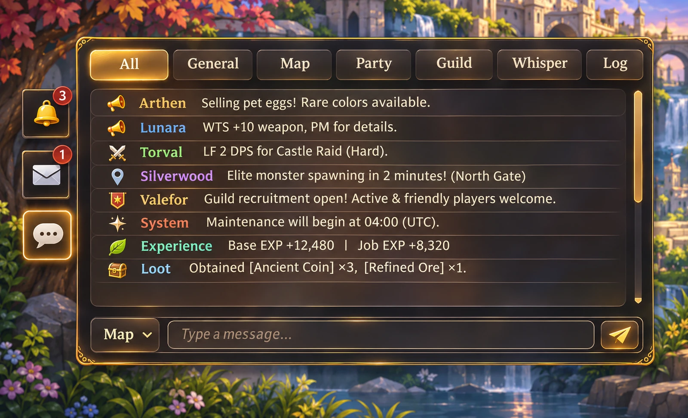
Supplied chat-panel concept · use for panel hierarchy and launcher relationship. Sample channel names, messages, unread counts, and ornate frame details are not production data.
Interaction Guide
Component
Interaction
Expected Behavior
Entry point
Open Chat or Mail from its existing launcher
The large panel and small peak identify the launcher that opened it.
Primary actions
Browse verified Chat channels, read the feed, compose and send; use existing Mail actions
Keep the message composer available while the feed scrolls. The reference does not define Mail behavior or extra channels.
States and platform
Active channel, unread state, open and closed
Desktop supports mouse and keyboard focus; mobile opens by tap and repositions or becomes a sheet. Preserve an unsent draft during repositioning; see Chat & Mail panels.
Use a large contextual panel for full Chat or Mail interaction, connected to its launcher by a small peak pointer. The peak identifies which control opened the panel; it is functional positioning, not extra decoration. Use a compact popup only for a brief preview or one-step action.
Panel and pointer usage
Pattern
Guideline
Desktop
Mobile
Launcher relationship
Chat opens the Chat panel and Mail opens the Mail panel. Keep the active launcher visibly associated with its open panel; point the small peak toward that launcher.
Place the panel beside or below the launcher. Reposition it when it would cover critical HUD controls.
Open from a tap. Anchor near the launcher when space permits; keep the origin clear if the panel becomes a sheet.
Large Chat panel
Use for channel browsing, message history, and composing a message. Keep the message list as the primary scroll area and keep the composer and send action easy to find.
Support mouse selection, keyboard focus, scrolling, and the verified channel set. Preserve readable message grouping.
Use touch-sized tabs and composer controls; keep the active channel and send action visible while the message list scrolls.
Mail panel
Reuse the panel shell and small peak for Mail, but show only verified mail content, status, and actions. The reference image does not define Mail behavior.
Keep the panel attached to the Mail launcher and use existing mail actions.
Use the same responsive placement rules; do not invent claim, delete, or bulk actions.
Small peak pointer
Use one restrained pointer to connect panel edge and launcher. Keep the pointer attached as the panel repositions; do not let it obscure panel content or imply a different control.
Point to the launcher edge and flip panel placement to remain within the viewport.
Keep the pointer only while it can point accurately; otherwise use a clear sheet header and active-launcher state.
Channels and unread badges
Use the existing Chat channel contract: All, Map, Whisper, Global, Trade. Do not copy General, Party, Guild, or Log from the concept unless those channels are verified. Show unread counts only from actual unread state.
Hover may expose existing channel or message tooltips; keyboard focus must remain visible.
Tap to change channel; pair badge counts with accessible unread labels and avoid color-only status.
Close and preserve state
Provide a clear close action. Repositioning the panel must not change the selected channel or message state; do not discard an unsent draft without an explicit product rule.
Support the existing close and keyboard-dismissal conventions.
Keep close reachable and preserve the draft while the panel shifts to fit the screen.
Reuse the Modern Translucent Fantasy window surface, muted gold selection, minimal borders, and readable Ivory text. Keep the world and important HUD controls visible around the panel. The supplied concept is a Chat reference; it does not establish additional channels or any Mail feature behavior.
Supplied visual concept · click to save reference image · not production specification
Interaction Guide
Component
Interaction
Expected Behavior
Entry point
Open Inventory & Equipment from its existing HUD or menu destination
The reference is a proposed screen composition, not a new destination or source of item data.
Primary actions
Switch Status, Equipment, and Inventory; search, sort, select, equip, use, or manage items where supported
Preserve existing item categories and actions. Confirm discard and show the actual dismantle result.
Desktop and mobile
Mouse and keyboard; touch tabs on mobile
Desktop keeps the established independent windows. Mobile uses Status / Equipment / Inventory tabs; item, rarity, and stat values come from game data.
Adopt: Preserve three independently movable windows and the game world.
Implementation corrections: The image mixes mobile joystick/radial controls with desktop windows; remove those controls on desktop and retain the existing keyboard HUD. The HUD identity (KaiTom / Paladin) conflicts with the Druid panel; use the same live character throughout. Verify VIT 84 and all other stats against the original; do not copy AI-rendered values. Reduce decorative gold outlines and use a darker window surface for readability.
Character & Inventory×
Status
Druid · Lv.150 / Job 70
Stat points left: 0
STR232
AGI48
VIT84
INT89
DEX32
LUK132
Combat stats ▾
Equipment
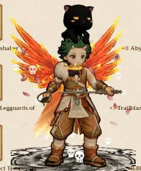
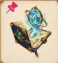
+8
+8
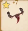
+8
+8
Inventory
AllConsumableEquipmentMaterialsMore
Search items… Sort: Quantity ▾
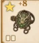
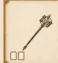
Weight 2,310 / 10,352 (22.3%)
Use / EquipDismantleDiscardFavorite
Interaction Guide
Component
Interaction
Expected Behavior
Entry point
Open Inventory & Equipment from its existing destination
Use the current character and inventory state; this preview does not create or modify items.
Primary actions
Switch Status / Equipment / Inventory, search, sort, inspect, use, or equip
Dismantle and discard remain distinct; confirm discard and show the real dismantle result.
Desktop and mobile
Drag or resize desktop windows; use tabs on mobile
Preserve item categories and favorites. Item counts, rarity, comparison, and outcomes come from game data.
Proposed HTML layout study · static, not live game functionality. Artwork crops from supplied screenshots.
Desktop: draggable/resizable windows, preserve item categories and favorite states. Mobile: Status / Equipment / Inventory tabs. Search and sort remain visible. Compare equipped item; confirm discard and show dismantle outcome. Rarity colors must use actual game mapping.
Original screen reference
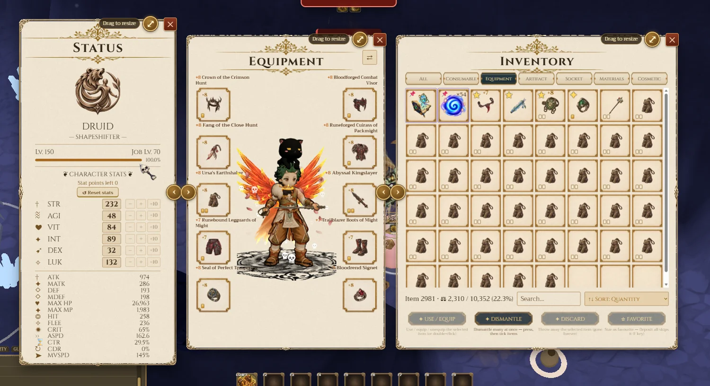
Current Status / Equipment / Inventory
02 · Skill & Passive Tree
Skills×
ShapeshifterTamerPassive Tree
Skill points: 0Class 2 unlocked
Ursa
Ursa Form10/10
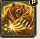
Ursa’s Savage5/5
Stomp10/10
Maul5/5
Primal Roar5/5
Brutal Charge10/10
Panther
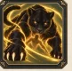
Panther Form0/10
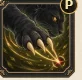
Panther’s Instinct0/5
Panther’s Claw0/10
Hunt in the Dark0/5
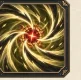
Tear Apart0/10
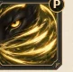
True Cat0/5
Viper
Viper Form0/10
Viper’s Sense0/5
Toxin Splash0/10
Viper Molt0/5
Acid Toxin0/10
Updose0/5
Ursa Form
Rank 10 / 10 · Active
Current rank / Next rank
MP cost · Cooldown · Requirements
Read values from game data; no inferred dependencies.
Assign to hotbar
Reset skill
Confirm changes (disabled)
Interaction Guide
Component
Interaction
Expected Behavior
Entry point
Open the existing Skills or Passive Tree destination
Select the character class/path already supported by the game.
Primary actions
Select a skill or node, review its details, assign eligible skills, and confirm or reset as supported
Show allocated, available, locked, pending, and selected states from authoritative data; do not infer dependencies.
Desktop and mobile
Select and inspect skills
Desktop supports the existing hotbar assignment flow; mobile uses pan/zoom and a detail sheet where the graph is present.
Proposed HTML layout study · static, not live game functionality. Artwork crops from supplied screenshots.
Show class tabs, branch groups, available points, current/next rank and prerequisites from authoritative game data. Passive Tree uses real node graph; no screenshot of passive tree supplied, so no fabricated connections. Mobile: pan/zoom with detail sheet; confirm or cancel pending allocation. Preserve reset and hotbar assignment.
Supplied visual concept · click to save reference image · not production specification
Interaction Guide
Component
Interaction
Expected Behavior
Entry point
Open Battle Pass from its existing HUD or menu entry
The concept illustrates a seasonal pass view; season data and eligibility come from the game.
Primary actions
Review tiers and perks; claim eligible rewards; gift or purchase only when applicable
Show claimed, claimable, and locked states. Hide Buy Level at max rank and avoid duplicate destinations or unsupported missions.
Desktop and mobile
Select a tier and move through the reward track
Desktop keeps tier context visible; mobile scrolls the track while retaining reward labels. See the existing Battle Pass design contract for pricing and eligibility.
Adopt: Season progress, compact perks, sticky tier labels, reward track and one gifting action.
Implementation corrections: Review/Rewards/Missions tabs are proposals; do not introduce duplicate destinations or unsupported missions. Preserve EXP sources and previous-level navigation (1–30). Hide Buy Level at max rank. Show pricing on pass details, not as persistent purchase prompts for active owners. Fragment/GEM fee is 5% (normally 10%), not a negative fee. All rewards claimed is a status, not an enabled action.
Battle Pass×
Akani Set
Equipment preview · Full set
Akani: The First Flame
Season 1 · Level 30 / 30
Standard & Premium active
EXP / Job +50% · Weight +50% · Market fee FREE
All perksBuy NPC −10% · Sell NPC +10% · Fragment/GEM fee 5% · Player mail · Preset slot +1
Level
26
27
28
29
30
Free
5 StarsClaimed ✓
Warp TicketClaimed ✓
5 StarsClaimed ✓
Warp TicketClaimed ✓
Season titleClaimed ✓
Standard
10 StarsClaimed ✓
20 StarsClaimed ✓
EXP BoostClaimed ✓
20 StarsClaimed ✓
Akani ScarfClaimed ✓
Premium
3 EXP Boost TicketsClaimed ✓
30 StarsClaimed ✓
15 StarsClaimed ✓
30 StarsClaimed ✓
Phoenix WingsClaimed ✓
All rewards claimed
Interaction Guide
Component
Interaction
Expected Behavior
Entry point
Open Battle Pass from its existing HUD or menu destination
Season, rank, and ownership state load from the game.
Primary actions
Review the reward track and claim, gift, or purchase only when eligible
Claimed rewards are not actionable; hide Buy Level at max rank. Pricing and rewards are server-backed.
Desktop and mobile
Select a tier and move through the track
Keep tier context visible on desktop; allow horizontal track scrolling on mobile without losing reward state.
Proposed HTML layout study · static, not live game functionality. Artwork crops from supplied screenshots.
Preserve all three reward tracks and seasonal artwork. Anchor to current level, sticky tier labels, horizontal scroll, explicit claimed/claimable/locked states. Keep gifting and level purchase available only when applicable; all reward/perk data from game state.
Supplied visual concept · click to save reference image · not production specification
Interaction Guide
Component
Interaction
Expected Behavior
Entry point
Open Daily Rewards from its existing Rewards destination
Show the current day and next reward from authoritative server state.
Primary actions
Claim today when eligible and review the calendar
Keep the Daily Reward claim separate from the Star Pass claim; claimed rewards are not actionable.
States and platform
Today, tomorrow, upcoming, and claimed
Mobile uses a scrollable calendar with a clear claim area. Server controls eligibility, day change, cumulative progress, and duplicate-claim protection.
Adopt: Today and tomorrow cards, compact Star Pass, 30-day calendar with clear claimed states.
Implementation corrections: Remove unrelated Akani Set preview; it is not part of daily rewards. Reduce to a centered compact window (~65–70% desktop width subject to readability). Keep progress once; remove duplicate percentage/count. Star Pass must show its own Claimed today state. Footer should say Claimed today, not All rewards claimed (future days remain). Preserve all 30 rewards and cumulative login rules.
Daily Rewards×
Star Pass · Active
80 Stars/day · 3 days remaining Claimed ✓
Day 13 / 30
Today: 20,000 Gold · Claimed ✓
Tomorrow: 30 Stars
Day 1
5,000 Gold
✓ Claimed
Day 2
EXP Boost
✓ Claimed
Day 3
10,000 Gold
✓ Claimed
Day 4
10 Stars
✓ Claimed
Day 5
Warlord’s Steak
✓ Claimed
Day 6
20,000 Gold
✓ Claimed
Day 7
30 Stars
✓ Claimed
Day 8
5,000 Gold
✓ Claimed
Day 9
3 Warp Tickets
✓ Claimed
Day 10
10,000 Gold
✓ Claimed
Day 11
10 Stars
✓ Claimed
Day 12
Warlord’s Steak
✓ Claimed
Day 13
20,000 Gold
✓ Claimed
Day 14
30 Stars
Tomorrow
Day 15
5,000 Gold
Upcoming
Day 16
EXP Boost
Upcoming
Day 17
10,000 Gold
Upcoming
Day 18
10 Stars
Upcoming
Day 19
Warlord’s Steak
Upcoming
Day 20
20,000 Gold
Upcoming
Day 21
30 Stars
Upcoming
Day 22
5,000 Gold
Upcoming
Day 23
3 Warp Tickets
Upcoming
Day 24
10,000 Gold
Upcoming
Day 25
10 Stars
Upcoming
Day 26
Warlord’s Steak
Upcoming
Day 27
20,000 Gold
Upcoming
Day 28
30 Stars
Upcoming
Day 29
EXP Boost
Upcoming
Day 30
50 Stars
Upcoming
Cumulative login · Missing a day does not reset progress · New day starts at midnight (Thai time).
Interaction Guide
Component
Interaction
Expected Behavior
Entry point
Open Daily Rewards from the existing Rewards destination
Show the current reward day from server state.
Primary actions
Review the calendar and claim today when eligible
Keep the daily claim separate from the Star Pass claim; tomorrow and upcoming rewards are informational.
States and system behavior
Today, tomorrow, upcoming, and claimed
Server controls eligibility, daily reset, cumulative login progress, and duplicate-claim protection; mobile calendar scrolls.
Proposed HTML layout study · static, not live game functionality. Artwork crops from supplied screenshots.
Claim-first: today’s reward and next reward above calendar. Separate Star Pass claim from daily login claim. Server controls day, eligibility, reset and duplicate-claim protection. Mobile: compact scrollable calendar; no tiny touch targets.
Original screen reference
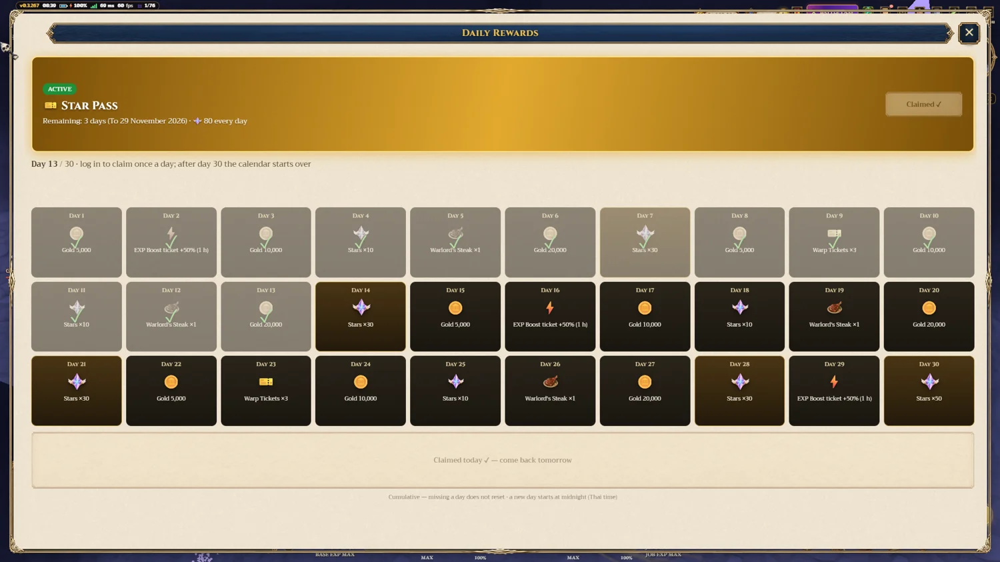
Current Daily Rewards
Shared components: WindowShell, Tabs, ItemSlot, SkillNode, RewardTile, ProductCard, CurrencyBalance, ProgressBar, QuantityStepper, ConfirmationDialog. Provide loading, empty, error, disabled, focus and pending states. Server validates all purchases, claims and allocations. Preserve keyboard focus on modal close, support Escape, and avoid color-only statuses.
The five layout studies are HTML design concepts, not pixel-perfect final renders or game integrations. Cropped artwork may include parts of original UI. Passive node relationships, rarity mapping, and final mobile sizing require validation. Previous generated Main Menu concepts are not accepted as internal screen references.
One persistent category system. Contextual subcategories only. No duplicate Top up.
Collapsible category sheet; restore selection and scroll position.
Commerce
One balance group; explicit currency, price, duration, ownership and purchase confirmation.
Same information; touch-friendly detail sheet. Never charge from preview.
Visual consistency
Warm charcoal/walnut, ivory, muted antique gold; navy only as contextual artwork, not a separate component theme.
Same tokens; no whole-screen scaling.
Rewards
Claimable state first; claimed status is non-interactive; preserve calendar and track data.
Scrollable calendar or reward track, accessible labels and stable claim area.
Progressive disclosure
Rank details, perks, EXP sources and item descriptions on demand.
Use a sheet or expandable section, with visible back/close.
Skill & Passive Tree
Retain v2.0 HTML study; real prerequisites and node graph only.
No new visual supplied; pan/zoom and details remain proposals.
Krug acceptance principles
Design for scanning: prioritize the player’s immediate task. Group related information. Remove redundant controls, not useful capabilities. Use familiar labels and clear states. Preserve secondary details through progressive disclosure. Use text plus icon, not color alone.
Reference precedence
Authoritative game state and original screenshots → approved functional contracts → supplied visual studies. The two cosmetics images are alternative views of one system; the warm browse-first version is the recommended base. Existing desktop/mobile HUD, mood board, original screenshots and interactive demos are retained from v2.0.
06D / Onboarding & Character Creation · v2.3
One game · one design language · fewer decisions. ภาพเป็น visual concept เท่านั้น: ข้อกำหนดด้านล่างและข้อมูลเกมจริงมีลำดับความสำคัญเหนือภาพ
01 / Welcome & Agreement
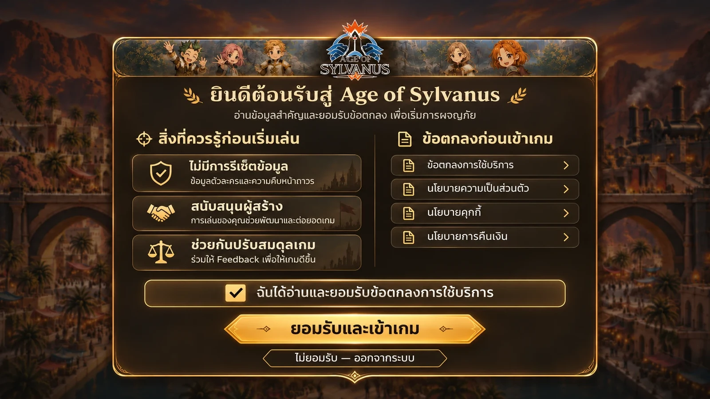
Latest welcome concept — retain original logo and environment; simplify ornamental frames and glow before implementation.
Interaction Guide
Component
Interaction
Expected Behavior
Entry point
Shown at the existing welcome step before entering the game
Players review the welcome information and required agreements.
Primary actions
Open policy links, accept required agreements, or decline
Required checkboxes start unselected; Accept remains disabled until requirements are met. Do not merge optional consent with required agreement.
Desktop and mobile
Scroll and review before confirming
Mobile stacks content and keeps actions reachable. Record the accepted document version through the existing account flow.
รักษาข้อมูลเดิมทั้ง 4 หัวข้อ: No Data Wipe, Support the Creators, Cross-game Rewards, Shape the Balance. ใช้หัวข้อสั้นและรายละเอียดแบบเปิดอ่านเพิ่ม โดยไม่ตัดสาระหรือเปลี่ยนคำสัญญาของเกม
Latest character creation concept — single scene, race selector, character preview and future class information.
Interaction Guide
Component
Interaction
Expected Behavior
Entry point
Continue from Welcome to Character Creation
Creation remains in the existing single-scene flow.
Primary actions
Choose a race, enter a name, review its verified starting class, and create
Create stays disabled for an empty or invalid name; starting-class mapping comes from verified game data.
Desktop and mobile
Select race and review the character preview
Mobile stacks race, preview, details, and name with Create reachable. Preserve the current character-creation rules; no future class options are implied.
Original character creation screenshot
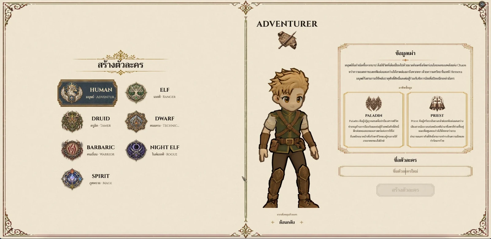
Original game screen — source for race and Human class paths.
Single-scene contract
เลือกเผ่า → ตั้งชื่อ → สร้างตัวละคร ใน scene เดียว ไม่มี stepper หรือ class selection. Starting class ผูกกับเผ่าโดยอัตโนมัติ
Human → Adventurer; Elf → Ranger; Druid → Tamer; Barbaric → Warrior; Night Elf → Rogue; Spirit → Mage. Dwarf starting class ต้องยืนยันชื่อเต็มจากข้อมูลเกม
Stack preview, race selector, class info, name; sticky Create
Video
Contextual modal, keyboard close, focus restore
Touch-friendly player, no autoplay, close restores state; lazy load only when opened
Name input
Inline validation and pending state
Keyboard-aware layout, keep input and CTA reachable; no viewport zoom suppression
04 / Brand & Krug rules
Reuse v2.2 tokens: Charcoal #1A1611, Walnut #302820, Antique Gold #C4A36B, Ivory #F2EBDD; 6–8px rounded rectangles; modal surface 96%; default/hover/selected overlays 8/16/25%; no ornamental frames or glow by default. Inter / Noto Sans Thai for body; Cinzel for fantasy headings. 44–48 CSS px touch targets; 4px spacing grid. Art carries fantasy identity, not interface ornamentation.
Status: proposed v2.3 extension. No live game integration or browser/device QA. Mobile onboarding and creation are specified and demonstrated responsively in HTML; dedicated corrected mobile artwork is not included.
06E / Settings & Passive Tree · v2.4
Modern Translucent Fantasy · Settings should be easy to scan, change and understand. ภาพเป็น visual concept; ค่าตั้งต้นและข้อมูลเกมให้ยึดระบบจริงเหนือภาพเสมอ
Settings visual studies
Settings overview — nine category concepts; layout and component treatment only.
Interaction Guide
Component
Interaction
Expected Behavior
Entry point
Open Settings from the existing game menu
The overview leads into the confirmed Settings categories.
Primary actions
Search or choose a category, then inspect or change its settings
Selected category and current values remain clear; show live preview only where the existing contract supports it.
Desktop and mobile
Use category navigation and content
Desktop uses the established sidebar/content arrangement; mobile uses a drawer or scrollable categories and one content panel. Persist only according to the existing settings policy.
Alternative Settings shell — account/support and contextual controls.
Interaction Guide
Component
Interaction
Expected Behavior
Entry point
Open Settings from the existing game menu
This is an alternate Settings shell, not a separate Settings destination.
Primary actions
Navigate to confirmed categories and Account & Support actions
Keep account, legal, and support actions distinct; show destructive actions as secondary and use only supported destinations.
Desktop and mobile
Select category or contextual control
Keep the same Settings behavior across shells; mobile reflows the navigation and preserves access to Close and the current category.
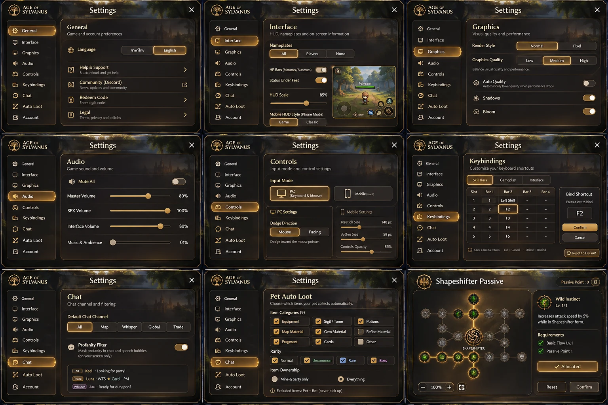
Passive Tree and Settings — node detail composition; effects and prerequisites are illustrative.
Interaction Guide
Component
Interaction
Expected Behavior
Entry point
Open Passive Tree as the separate Build-planning view
The image is a node-detail composition, not an authoritative graph.
Primary actions
Pan or zoom, select a node, review details, and confirm or cancel pending allocation
Allocated, available, locked, pending, and selected states follow real node data. Reset and allocation rules remain those of the game.
Desktop and mobile
Select nodes and inspect details
Mobile uses pan/zoom with a detail sheet; node links, ranks, costs, and effects must come from verified data.
Unified navigation & information architecture
ใช้ Settings Shell เดียว: หัวข้อ Settings, Search, Close, sidebar และ content area. จัดหมวด Preferences (General, Interface, Graphics, Audio), Gameplay (Controls, Keybindings, Chat, Pet Auto Loot), Account & Support (Account, Help & Support). ไม่แสดง utility actions ซ้ำทุกหน้า; Stuck และ Warp to Town ใช้ action เดียวกัน.
Screen
Design & interaction contract
General
Language: Thai / English; player chat is not translated. Move support and account actions to their own groups.
Interface
Nameplates: All / Players / None; HP bars and status under feet: ON/OFF; HUD scale 85% in reference; mobile HUD Game / Classic; proposed live preview.
Graphics
Normal / Pixel; Low / Medium / High; Auto Quality and Shadows; Bloom referenced by original effects copy. Show effective quality when auto-adjusted.
Audio
Master 80%, SFX 100%, UI 80%, Music 0% in original; Mute ON. Preserve values when muted.
Controls
PC / Mobile input mode; Mouse / Facing dodge direction. Mobile controls: joystick 140px, buttons 58px, opacity 85% in reference. Show relevant controls by mode.
Hotkeys
Settings → Hotkeys. Preserve four bars × nine slots; remap skills, Quick Aid, bar switching, and combat actions. Q, E, R, F, 1–6, 9, 0, Tab, Shift, and Space are illustrative. Click or press to bind, Esc cancels, Delete unbinds; validate conflicts before save and confirm reset.
Chat
Default channel: All / Map / Whisper / Global / Trade; profanity filter ON/OFF, local screen only.
Pet Auto Loot
Multi-select nine categories: Equipment, Sigil / Tome, Potions, Map Material, Gem Material, Refine Material, Fragment, Cards, Other. Rarity: Normal, Uncommon, Rare, Boss. Ownership: Mine & party / Everything after lock expires. Excluded items for Pet + Bot.
Account & Support
Player ID and copy, Redeem Code, Choose Character, Sign Out, Legal; Hard Refresh, Warp to Town (5-minute cooldown), Discord. Keep destructive actions secondary.
Bot Settings dashboard
Earlier dashboard concept · reference for information hierarchy and control grouping; values and rules are not verified.
Interaction Guide
Component
Interaction
Expected Behavior
Entry point
Open Bot Settings from Settings
Use the existing Bot Settings entry and mode state.
Primary actions
Choose an available automation mode and configure supported categories
Selected values in this image are illustrative. Full Auto behavior and any unsupported control remain unverified; use the Functional Specification.
States and system behavior
Saving, saved, error, and mode state where supported
Per-character auto-save is shown in a reference, not confirmed backend behavior. Desktop uses the category navigation; mobile uses the existing responsive Settings pattern.
In-game-context concept · shows mode selection, category navigation, Combat controls, and Advanced Settings. Displayed world, target, status, and setting values are illustrative.
Interaction Guide
Component
Interaction
Expected Behavior
Entry point
Open Auto Settings from the HUD gear
Opening settings does not toggle Auto Combat.
Primary actions
Choose Off, Semi Auto, or Full Auto where supported; switch Combat, Recovery, Loot, or Movement
Reflect acknowledged mode and category state. Do not infer Full Auto behavior from the image; use the Bot Settings contract.
Desktop and mobile
Use mode and category controls
Keep HUD and Settings state synchronized. Mobile reflows the same categories and keeps the primary status reachable; persistence follows the verified save contract.
Both images are visual references, not authoritative game rules or production defaults. The newer image visibly offers Off, Semi Auto, and Full Auto, but it does not define Full Auto behavior. Use verified game settings and server responses for all production values.
Functional Specification
Status labels: Handoff means behavior is already documented in this handoff; Reference means the control or value appears in the supplied dashboard image but is not verified as live game behavior or a production default; Proposed UX marks interaction guidance, not a new game mechanic. All values below taken from the image are reference states only. Use authoritative game settings and server responses for production values.
Combat
Function / purpose
Behavior / interaction
Options / reference state
Dependencies / validation
Desktop / Mobile
Status
Automation mode — control the scope of bot automation.
Off means no bot actions. Semi Auto is described in the reference as buffs, potions, and food only, with no attacks or boss hunt. Full Auto is now visible as an option in the newer reference, but its behavior is not defined in the current handoff; do not infer which actions it enables.
The earlier image shows Off and a Turn On Semi Auto action; the in-game-context image shows Semi Auto selected and offers Off, Semi Auto, and Full Auto. Actual default is unverified.
Offer only modes supported by the game. Confirm Full Auto scope and mode transitions against the authoritative game contract before exposing it. Do not start automation merely by opening Settings.
Desktop: keep current mode and primary action in the status header. Mobile: keep mode and status reachable from the compact category view.
All three modes: Reference. Full Auto behavior remains unverified.
Target selection — choose eligible targets for automated combat.
Select or clear target cards; reflect the selected set in the current automation configuration.
Target cards are shown, with two examples selected. Names and selection defaults are illustrative, not canonical.
Populate only from the game-provided eligible target list. If no targets are available, show an empty state; do not invent targets or selection rules.
Desktop: show selectable cards in Targets. Mobile: use a stacked selectable list with the same labels and selected state.
Reference; target source and selection limits require game confirmation.
Counter attacking monsters — decide whether this target rule is enabled.
Independent on/off setting; persist and display the acknowledged value.
On in the image; production default unverified.
Apply only if this rule exists in the game. Do not imply a range or priority not defined by game data.
Desktop: inline switch in Targets. Mobile: labeled switch in the stacked Targets view.
Reference.
Attack giant monsters — decide whether this target rule is enabled.
Independent on/off setting; reflect the saved runtime value.
Off in the image; production default unverified.
Show only when supported. The meaning of giant monster and any targeting limits must come from game data.
Desktop: inline switch in Targets. Mobile: labeled switch in the stacked Targets view.
Reference.
Do not steal kills — apply the named target restriction.
Independent on/off setting; do not silently change it when mode or target selection changes.
Off in the image; production default unverified.
Keep the label and restriction semantics aligned with the game contract; do not invent ownership, party, or priority rules.
Desktop: inline switch with its help text. Mobile: labeled switch with help available on demand.
Reference; exact rule requires game confirmation.
Combat mode — choose which attack actions are allowed.
One option is selected at a time; switching mode updates configuration only after the game accepts it.
Apply only to items and areas supported by the game. Do not imply guaranteed pickup or ownership.
Desktop: switch in Pick Up Loot. Mobile: labeled switch in the stacked Loot view.
Reference.
Let the Pet Loot — enable or disable pet pickup behavior.
Keep the pet control distinct from bot pickup; changing one must not silently toggle the other.
On in the image; production default unverified.
Respect the existing Pet Auto Loot contract and actual pet availability. Keep its category and ownership rules in sync only where the game uses a shared setting.
Desktop: separate switch in Pick Up Loot. Mobile: separate labeled switch.
Reference; interaction with Pet Auto Loot follows game settings.
Whose drops — select the supported loot ownership scope.
Choose one scope and display the acknowledged selection.
Mine Only selected; Everything also shown. The existing Settings text separately documents Mine & party / Everything after lock expires; do not merge these labels without confirming the shared rule.
Use authoritative ownership, party, and lock-expiry rules. Validate selected scope against current character permissions.
Desktop: single-choice control. Mobile: stacked single-choice rows with full labels.
Reference plus existing Pet Auto Loot handoff; exact equivalence unverified.
Loot categories — choose item groups eligible for pickup.
Allow supported categories to be selected independently; preserve the saved set.
Equipment, Sigil / Tome, Potions, Map Material, Gem Material, Refine Material, Fragment, Cards, Other. All are checked in the image; actual defaults unverified.
Use the authoritative category list. Keep excluded items and Pet + Bot exclusions from the existing handoff; do not imply unsupported categories.
Category navigation — move between the four settings groups.
Selecting Combat, Recovery, Loot, or Movement changes the visible settings group without changing the automation mode or saved values.
Four categories are shown; the selected category is Combat in the newer image.
Use only the documented categories. Preserve each group state when switching categories.
Desktop: visible category tabs. Mobile: compact, reachable category selector with the same four destinations.
Reference layout; state-preservation behavior is Proposed UX.
Advanced Settings — disclose secondary options.
Expand or collapse the labeled group without changing automation mode or applying settings by itself.
Collapsed in the newer image; contents are not shown.
Do not place unverified controls inside it. Preserve current values when collapsed.
Desktop: disclosure row within the panel. Mobile: same labeled expandable group.
Reference control; state behavior is Proposed UX.
HUD synchronization — keep visible bot controls aligned with Settings.
The Auto Combat HUD toggle changes automation state; its separate gear opens settings without toggling it. Reflect server-acknowledged status in both places. Keep Auto Combat and Quick Aid as independent controls.
HUD displays the active ON/OFF state; no global default is asserted.
Use the existing Auto Combat behavior contract. If a save or runtime update fails, retain the last confirmed state and show an error.
Desktop: toggle and gear stay separate. Mobile: both hit areas remain at least 44 × 44 px; keep status visible in the compact HUD.
Existing handoff contract.
Quick Aid integration — preserve the existing quick-use and rules surface.
Quick Aid remains separate from bot combat. HUD item use, Auto ON/OFF, and Rules remain distinct. Bot HP/MP potion controls must not silently overwrite Quick Aid assignments or thresholds; link values only if the game exposes one shared setting.
Existing demo shows two occupied slots, an Auto Aid Rules HP threshold of 50% as an interaction example, and empty add slots. It does not use real items.
Item trigger, cooldown, and stock are server-validated. Never consume an item in preview. Do not treat the demo threshold as a bot potion default.
Desktop: Quick Aid remains near the skill bar. Mobile: four slots including add, with Auto and Rules available.
Existing handoff contract; threshold is demo-only.
Per-character auto-save — preserve settings by active character.
The image says Saved automatically · Per character. If this is the live contract, save changes to the active character and show saving, saved, or failed status; do not show Saved before persistence succeeds.
Auto-save is shown in the newer image; the earlier image says per-character. Timing, scope, and backend behavior are not confirmed.
Confirm the storage scope and server contract. Do not claim per-character persistence if it is not implemented.
Desktop: status in the dashboard header. Mobile: keep save state visible within the active category.
Reset All to Defaults — restore Bot Settings values.
The reference shows a reset action. Proposed UX: confirm before applying, state the scope, restore authoritative defaults, then show the saved result.
No default values are enumerated by the image.
Proposed scope is Bot Settings for the active character only; do not reset HUD layout, skill assignments, account settings, or other categories. Cancel leaves all values unchanged.
Desktop: secondary action below settings. Mobile: keep it available after the settings list, not as a primary bot action.
Reference control; confirmation and narrow reset scope are Proposed UX.
Keep the existing Modern Translucent Fantasy tokens and Krug principles: show current state first, group related controls, use clear labels, preserve secondary detail on demand, and distinguish status with text and icons as well as color. The exact Full Auto scope, reference defaults, persistence rules, and any conflicting option behavior must come from authoritative game contracts.
Pan / zoom / fit view; ปุ่ม Reset ต้องยืนยันตามระบบจริง และ Confirm disabled เมื่อไม่มีการเปลี่ยนแปลง. ใช้ Close เพียงตำแหน่งเดียว. Mobile ใช้ pinch/pan และ detail sheet ที่ไม่บัง graph ถาวร.
Responsive & visual direction
Desktop: compact rows, 180–220px sidebar, 75–85% viewport width เป็น baseline. Mobile: category drawer หรือ scrollable tabs, single content panel, touch target 44–48px, safe area และ scroll ภายในหน้าต่าง. ใช้ Charcoal #1A1611, Walnut #302820, Antique Gold #C4A36B, Ivory #F2EBDD; radius 6–8px, no ornamental border, no heavy glow, Inter/Noto Sans Thai และ Cinzel เฉพาะหัวเรื่อง.
ภาพรวมบางภาพมีกรอบทอง/Glow มากเกินมาตรฐาน, ค่าเสียงและกราฟิกไม่ตรงต้นฉบับ, เมนูซ้ำ และ passive effects ที่ไม่ได้ยืนยัน. ใช้ภาพเพื่อ composition เท่านั้น; ไม่เพิ่ม server time, game tips, chat options หรือ settings อื่นที่ยังไม่ยืนยัน. Live preview และ key conflict feedback เป็นข้อเสนอ UX ไม่ใช่ฟังก์ชันที่ยืนยันแล้ว. ยังไม่มี mobile mockup เฉพาะ Settings และยังไม่ได้ทดสอบเกมจริง.
06F / World Map & Area Selection
Use the supplied Snowland East Field 1 screen as a visual reference for map selection and information hierarchy. Its map art and displayed names, levels, roster, EXP, drop rates, and warp messaging are illustrative; verify all game data and mechanics against authoritative sources.
Supplied visual reference · composition and panel relationships only; sample data is not production specification.
Interaction Guide
Component
Interaction
Expected Behavior
Entry point
Open World Map from its existing HUD or menu launcher
The map appears without selecting or warping to a destination.
Primary actions
Search or select an area, review verified details, then choose Warp separately
Selection does not trigger travel. Unavailable, loading, empty, and error states use current game rules.
Desktop and mobile
Browse list, map, and details
Desktop uses the three-pane layout; mobile prioritizes map with details in a sheet. Names, levels, drops, costs, and warp status are server-backed; see World Map guidance.
Layout and component usage
Area
Usage
Guidance
Destination list
Find and select a map or area.
Search verified destination names and supported filters. Show a clear empty state and a way to clear the query. Selecting a result updates the map and details.
Map canvas
Explore geography and select an area.
Support pan and zoom. Keep marker labels legible and avoid overlap as the view changes. Distinguish the selected destination, current player location, other areas, and boss areas with icons and labels as well as color; provide an equivalent searchable list.
Area details
Review the selected area before travel.
Show the verified area name and relevant game-backed details such as level range, monsters, and drops. Use one clear primary Warp action when travel is available.
Legend and map controls
Explain markers and viewport controls.
Keep the legend visible near the map. Make zoom and reset controls keyboard accessible and touch friendly; do not rely on hover to reveal essential information.
Selection, travel, and states
Map selection is not travel: choosing a list item or marker updates the selected area and its details without triggering Warp. Keep the player location distinct from the selected destination. Show Warp availability, cost, restrictions, or cooldown only when confirmed by game rules and current server state; do not infer ticket use from the reference image.
State
Expected treatment
No selection
Show the map and prompt the player to choose a destination; do not display misleading area details.
Selected area
Highlight the selected marker and synchronize the destination list and details panel.
Current location
Use a distinct player marker and explicit legend label; do not imply it is the selected destination.
Unavailable or restricted
Explain the verified reason and disable Warp with a readable state, not color alone.
Search loading, no results, or error
Show a concise status and a recovery action where available; preserve the query when practical.
Responsive and accessible behavior
Desktop may use the reference three-pane layout: destination list, map, and area details. On narrow screens, prioritize the map and open destination details in a dismissible sheet; keep search and the selected area easy to reach. Preserve the current selection when opening or closing the sheet. Use existing 44px minimum touch targets, safe-area insets, visible keyboard focus, descriptive marker names, and text labels for all status colors.
Reuse the existing Charcoal / Walnut surfaces, Ivory text, Antique Gold actions, 6–8px radius, and restrained borders. Check contrast over both light and dark map regions; dim or simplify map overlays when needed to keep markers readable.
07 / Developer implementation
Behavior contract
Component
Implementation requirement
Main screen hotbar
Support 1/2 skill-bar pages, configured page-switch key, top-left shortcut labels, empty-slot assignment, cooldown / active / unavailable / insufficient-MP states, Quick Aid separation, and per-character persistence. Preserve four bars × nine slots until the game configuration confirms a change.
Auto Combat
Toggle and separate settings gear; state reflects actual server response
Quick Aid
Separate from combat; item trigger, cooldown and stock validated by server; no automatic consumption in UI preview
Quick Access
Show feature only when unlocked; server validates entitlement
Monster inspection
Provide nameplate, quick info, detailed Overview / Attributes / Drops tabs, Target without attack, and Auto Target without changing automation mode; source all monster data from verified game data.
Damage Meter
Use authoritative combat records for the six requested metrics; support pin, collapse, reset, and retain results after combat.
Mobile
Pointer events, multi-touch, safe-area; no accidental page scroll on gameplay canvas
Performance
Avoid heavy blur, layered shadows and constant animation; HUD separate from 3D canvas
Persistence
Store HUD scale, row layout and positions; actual account or local storage policy to be decided


 +8
+8 +8
+8

 Ursa Form10/10
Ursa Form10/10 Stomp10/10
Stomp10/10 Maul5/5
Maul5/5 Primal Roar5/5
Primal Roar5/5 Brutal Charge10/10
Brutal Charge10/10 Panther’s Claw0/10
Panther’s Claw0/10 Hunt in the Dark0/5
Hunt in the Dark0/5 Viper Form0/10
Viper Form0/10 Viper’s Sense0/5
Viper’s Sense0/5 Toxin Splash0/10
Toxin Splash0/10 Acid Toxin0/10
Acid Toxin0/10 Updose0/5
Updose0/5